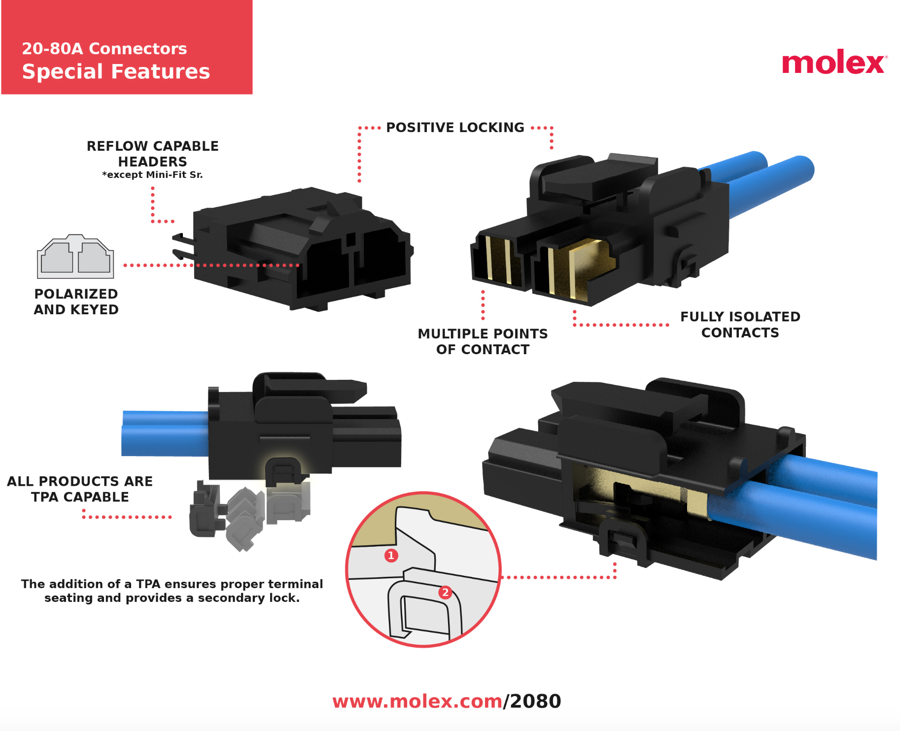
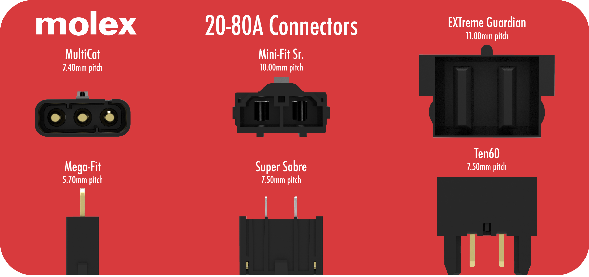
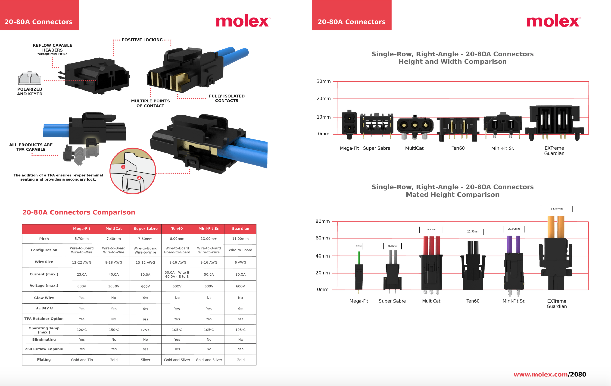

20-80A Connectors Graphics
Molex, Inc. | Summer 2017
A collection of graphics I created for the upcoming line of 20-80A Connectors.
Tools used: Maya, KeyShot 6, Illustrator
Card graphic inside the 20-80A Connectors Kit

Digital graphic of board layout

Datasheet included
